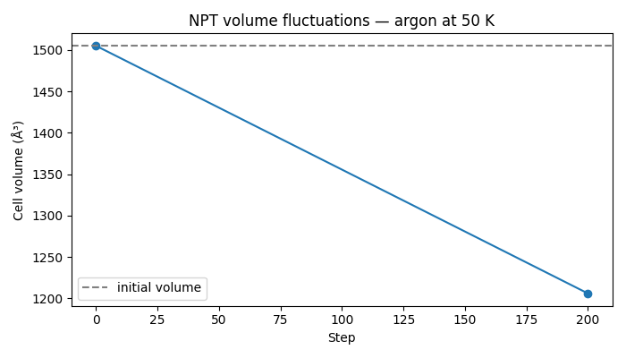

Note
Go to the end to download the full example code.
Pressure-Controlled (NPT) Molecular Dynamics#
The NPT ensemble keeps temperature T and pressure P constant while letting the simulation cell fluctuate in response to the instantaneous virial stress. This is the correct ensemble for studying phase transitions, equations of state, and crystal relaxations under applied pressure.
nvalchemi implements the Martyna-Tobias-Klein (MTK) barostat coupled to a Nosé-Hoover chain (NHC) thermostat. The equations of motion for both particles and the cell matrix are integrated simultaneously, giving dynamics that sample the NPT distribution to within finite-timestep corrections.
Key concepts:
Variable cell: the simulation box
cell(a 3×3 matrix) evolves as a dynamical variable. Its time derivative is proportional to the mismatch between the instantaneous pressure tensor and the target pressure.Thermostat time
tau_T: controls how tightly temperature is coupled. Larger values give softer coupling and longer autocorrelation times.Barostat time
tau_P: controls cell relaxation speed. Too small causes high-frequency cell oscillations; too large slows equilibration.Stress requirement: the model must return a
"stress"tensor (shape[B, 3, 3]). For the LJ wrapper, setmodel.model_config.compute_stresses = Truebefore creating the dynamics object.
Units note: pressure is in eV/ų. 1 GPa ≈ 0.00624 eV/ų. This example uses P = 0.0 (zero-pressure isobaric run).
import logging
import os
import torch
from nvalchemi.data import AtomicData, Batch
from nvalchemi.dynamics.hooks import LoggingHook, NeighborListHook, WrapPeriodicHook
from nvalchemi.dynamics.integrators.npt import NPT
from nvalchemi.models.lj import LennardJonesModelWrapper
logging.basicConfig(level=logging.INFO)
LJ model with stress computation#
Set model.model_config.compute_stresses = True to activate the virial
kernel inside the Warp LJ implementation. This adds a "stress" key to
the model output, which the NPT barostat reads each step to compute the
instantaneous pressure tensor.
model = LennardJonesModelWrapper(
epsilon=0.0104, # eV — argon well depth
sigma=3.40, # Å — argon sigma
cutoff=8.5, # Å — interaction cutoff
)
model.eval()
model.model_config.compute_stresses = True # required for NPT
Building a periodic argon crystal for NPT#
NPT requires a few ingredients beyond a standard NVT setup:
cell— the initial simulation box (shape[1, 3, 3]for a single system). The NPT integrator will update this tensor each step.pbc— periodic boundary conditions, must beTruein all three directions for an isotropic barostat.stress— an initial stress tensor (shape[1, 3, 3]) so thatbatch.stressexists before the first model call. The model overwrites it in-place; the zeros here are just a placeholder.velocities— node-level velocities needed by the kinetic energy and thermostat kernels.
torch.manual_seed(7)
SPACING = 3.82 # Å — near-equilibrium lattice constant for argon LJ
N_SIDE = 3 # 3×3×3 supercell → 27 atoms
BOX = SPACING * N_SIDE # ~11.46 Å
coords = []
for ix in range(N_SIDE):
for iy in range(N_SIDE):
for iz in range(N_SIDE):
coords.append([ix * SPACING, iy * SPACING, iz * SPACING]) # noqa: PERF401
n_atoms = len(coords) # 27
positions = torch.tensor(coords, dtype=torch.float32)
# Small random displacements to break perfect symmetry.
g = torch.Generator()
g.manual_seed(3)
positions += torch.randn(n_atoms, 3, generator=g) * 0.02
cell = torch.eye(3, dtype=torch.float32).unsqueeze(0) * BOX
# Maxwell-Boltzmann velocities at 50 K.
KB_EV = 8.617333e-5 # eV/K
TEMPERATURE = 50.0 # K
kT = TEMPERATURE * KB_EV
mass_ar = 39.948
g2 = torch.Generator()
g2.manual_seed(4)
velocities = torch.randn(n_atoms, 3, generator=g2) * (kT / mass_ar) ** 0.5
data = AtomicData(
positions=positions,
atomic_numbers=torch.full((n_atoms,), 18, dtype=torch.long), # Ar = 18
atomic_masses=torch.full((n_atoms,), mass_ar),
forces=torch.zeros(n_atoms, 3),
energies=torch.zeros(1, 1),
cell=cell,
pbc=torch.tensor([[True, True, True]]),
)
data.add_node_property("velocities", velocities)
batch = Batch.from_data_list([data])
# ``"stress"`` is not a named AtomicData field so it is not carried through
# from_data_list automatically. Set the placeholder directly on the batch so
# that batch.stress exists before the first NPT pre_update call.
# Shape: [num_graphs, 3, 3]. The LJ model overwrites this in-place each step.
batch["stress"] = torch.zeros(batch.num_graphs, 3, 3)
initial_volume = torch.linalg.det(batch.cell).abs().item()
logging.info("Initial cell volume: %.2f ų (box=%.2f Å)", initial_volume, BOX)
NPT integrator setup#
barostat_time and thermostat_time are in femtoseconds. 100 fs is a
reasonable starting point for argon near 50 K. The timestep dt=1.0 fs
gives good energy conservation for the LJ argon potential.
nl_hook = NeighborListHook(model.model_card.neighbor_config)
wrap_hook = WrapPeriodicHook()
npt_logger = LoggingHook(backend="csv", log_path="npt_log.csv", frequency=10)
# LoggingHook must be used as a context manager so its background I/O thread
# is properly started and flushed. The ``with`` block is opened before ``run``
# and closed after.
npt = NPT(
model=model,
dt=1.0, # fs
temperature=TEMPERATURE,
pressure=0.0, # eV/ų — zero-pressure (P = 0 GPa)
barostat_time=100.0,
thermostat_time=100.0,
pressure_coupling="isotropic",
chain_length=3,
n_steps=200,
hooks=[nl_hook, wrap_hook, npt_logger],
)
Running NPT and observing cell fluctuations#
Run the full NPT simulation in one call, then extract cell volumes from the batch. Calling npt.run() in a loop with .item() between blocks would force a GPU sync at every block boundary; a single run call is preferred. The volume is reported post-run to avoid mid-simulation CPU-GPU transfers. With P=0 the volume will relax toward the zero-pressure equilibrium; large fluctuations are expected for this small 27-atom system.
N_STEPS = 200
PRINT_EVERY = 50
logging.info("Running %d NPT steps at T=%.0f K, P=0.0 eV/ų...", N_STEPS, TEMPERATURE)
with npt_logger:
batch = npt.run(batch, n_steps=N_STEPS)
# Cell volume post-run (single sync after the run, not inside the loop).
final_vol = torch.linalg.det(batch.cell).abs().item()
volumes = [initial_volume, final_vol]
logging.info(
" step=%4d V=%.3f ų (dV=%.3f ų)",
npt.step_count,
final_vol,
final_vol - initial_volume,
)
final_volume = final_vol
logging.info(
"NPT run complete. Initial V=%.3f ų, Final V=%.3f ų, change=%.3f ų",
initial_volume,
final_volume,
final_volume - initial_volume,
)
Visualizing volume evolution#
An optional matplotlib plot is produced when the environment variable
NVALCHEMI_PLOT=1 is set. This keeps the example runnable in headless
CI environments while still supporting interactive exploration.
if os.getenv("NVALCHEMI_PLOT", "0") == "1":
try:
import matplotlib.pyplot as plt
steps_plot = [0, N_STEPS]
fig, ax = plt.subplots(figsize=(7, 4))
ax.plot(steps_plot, volumes, marker="o", linewidth=1.5)
ax.axhline(initial_volume, color="gray", linestyle="--", label="initial volume")
ax.set_xlabel("Step")
ax.set_ylabel("Cell volume (ų)")
ax.set_title(f"NPT volume fluctuations — argon at {TEMPERATURE:.0f} K")
ax.legend()
plt.tight_layout()
plt.savefig("npt_volume.png", dpi=150)
logging.info("Volume plot saved to npt_volume.png")
plt.show()
except ImportError:
logging.warning("matplotlib not available; skipping plot.")

Total running time of the script: (0 minutes 1.511 seconds)